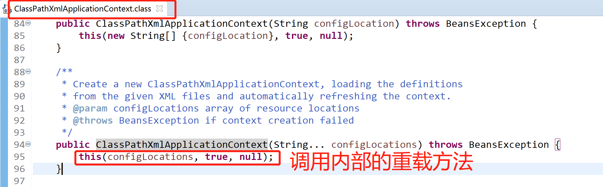

本文主要讲解Spring加载xml配置文件的方式，跟踪加载BeanDefinition的全过程。
new ClassPathXmlApplicationContext(“spring.xml”)用于加载CLASSPATH下的Spring配置文件，将配置文件传给构造函数，然后调用类内部的另外一个重载方法。

super(parent)的作用是为容器设置Bean资源加载器，层层跟踪，可知实际是由其父类AbstractApplicationContext完成设置的，parent为null，setParent(parent)就不继续跟踪了，这里需要注意的是，该类继承了DefaultResourceLoader，所以该类也作为资源加载器
AbstractApplicationContext.java
跟踪该类this()无参构造函数进去看看
AbstractApplicationContext.java
AbstractApplicationContext.java
PathMatchingResourcePatternResolver.java
设置Bean定义资源的路径，由其父类AbstractRefreshableConfigApplicationContext完成，resolvePath解析路径，一直跟踪到底层是调用PropertyPlaceholderHelper的parseStringValue完成设置的
这个就是整个Spring Bean加载的核心里面十二大步，用于刷新整个Spring上下文信息，定义了整个Spring上下文加载的流程。
@Override
public void refresh() throws BeansException, IllegalStateException {
synchronized (this.startupShutdownMonitor) {
//1、 Prepare this context for refreshing.
prepareRefresh();
//创建DefaultListableBeanFactory（真正生产和管理bean的容器）
//加载BeanDefition并注册到BeanDefitionRegistry
//通过NamespaceHandler解析自定义标签的功能（比如:context标签、aop标签、tx标签）
//2、 Tell the subclass to refresh the internal bean factory.
ConfigurableListableBeanFactory beanFactory = obtainFreshBeanFactory();
//3、 Prepare the bean factory for use in this context.
prepareBeanFactory(beanFactory);
try {
//4、 Allows post-processing of the bean factory in context subclasses.
postProcessBeanFactory(beanFactory);
//实例化并调用实现了BeanFactoryPostProcessor接口的Bean
//比如：PropertyPlaceHolderConfigurer（context:property-placeholer）
//就是此处被调用的，作用是替换掉BeanDefinition中的占位符（${}）中的内容
//5、 Invoke factory processors registered as beans in the context.
invokeBeanFactoryPostProcessors(beanFactory);
//创建并注册BeanPostProcessor到BeanFactory中（Bean的后置处理器）
//比如：AutowiredAnnotationBeanPostProcessor（实现@Autowired注解功能）
// RequiredAnnotationBeanPostProcessor（实现@d注解功能）
//这些注册的BeanPostProcessor
//6、 Register bean processors that intercept bean creation.
registerBeanPostProcessors(beanFactory);
//7、 Initialize message source for this context.
initMessageSource();
//8、 Initialize event multicaster for this context.
initApplicationEventMulticaster();
//9、 Initialize other special beans in specific context subclasses.
onRefresh();
//10、 Check for listener beans and register them.
registerListeners();
//创建非懒加载方式的单例Bean实例（未设置属性）
//填充属性
//初始化实例（比如调用init-method方法）
//调用BeanPostProcessor（后置处理器）对实例bean进行后置处理
//11、 Instantiate all remaining (non-lazy-init) singletons.
finishBeanFactoryInitialization(beanFactory);
//12、 Last step: publish corresponding event.
finishRefresh();
}
catch (BeansException ex) {
if (logger.isWarnEnabled()) {
logger.warn("Exception encountered during context initialization - " +
"cancelling refresh attempt: " + ex);
}
// Destroy already created singletons to avoid dangling resources.
destroyBeans();
// Reset 'active' flag.
cancelRefresh(ex);
// Propagate exception to caller.
throw ex;
}
finally {
// Reset common introspection caches in Spring's core, since we
// might not ever need metadata for singleton beans anymore...
resetCommonCaches();
}
}
}总结：
obtainFreshBeanFactory()函数调用，完成了容器初始化的最基础的功能，Bean定义资源的Resource定位、加载解析和注册
protected ConfigurableListableBeanFactory obtainFreshBeanFactory() {
//使用的委派模式，调用2个抽象方法，定义了obtainFreshBeanFactory的算法骨架，实际的行为交给了子类AbstractRefreshableApplicationContext实现
refreshBeanFactory();
ConfigurableListableBeanFactory beanFactory = getBeanFactory();
if (logger.isDebugEnabled()) {
logger.debug("Bean factory for " + getDisplayName() + ": " + beanFactory);
}
return beanFactory;
} /**
* This implementation performs an actual refresh of this context's underlying
* bean factory, shutting down the previous bean factory (if any) and
* initializing a fresh bean factory for the next phase of the context's lifecycle.
*/
@Override
protected final void refreshBeanFactory() throws BeansException {
//若有容器，销毁容器中的bean，关闭容器，以此保证refresh()之后使用的是新建立起来的IoC容器
if (hasBeanFactory()) {
destroyBeans();
closeBeanFactory();
}
try {
//创建IoC容器
DefaultListableBeanFactory beanFactory = createBeanFactory();
beanFactory.setSerializationId(getId());
customizeBeanFactory(beanFactory);
//调用加载bean定义的方法，使用了委派模式，在当前类中定义了抽象的loadBeanDefinitions方法，具体实现交给子类
loadBeanDefinitions(beanFactory);
synchronized (this.beanFactoryMonitor) {
this.beanFactory = beanFactory;
}
}
catch (IOException ex) {
throw new ApplicationContextException("I/O error parsing bean definition source for " + getDisplayName(), ex);
}
}st在这个方法中，先判断BeanFactory是否存在，若存在，则先销毁并关闭BeanFactory接着创建DefaultListableBeanFactory，并调用loadBeanDefinitions装在bean使用了委派模式，在当前类中只定义了抽象的loadBeanDefinitions方法，具体的实现交给子类AbstractXmlApplicationContext
/**
* Loads the bean definitions via an XmlBeanDefinitionReader.
* @see org.springframework.beans.factory.xml.XmlBeanDefinitionReader
* @see #initBeanDefinitionReader
* @see #loadBeanDefinitions
*/
@Override
protected void loadBeanDefinitions(DefaultListableBeanFactory beanFactory) throws BeansException, IOException {
// 为给定的bean工厂创建一个新的xmlbeanfinitionReader
XmlBeanDefinitionReader beanDefinitionReader = new XmlBeanDefinitionReader(beanFactory);
//使用此上下文的bean定义读取器配置
// 资源加载环境
beanDefinitionReader.setEnvironment(this.getEnvironment());
beanDefinitionReader.setResourceLoader(this);
beanDefinitionReader.setEntityResolver(new ResourceEntityResolver(this));
// 允许子类提供读取器的自定义初始化，然后继续实际加载bean定义
initBeanDefinitionReader(beanDefinitionReader);
loadBeanDefinitions(beanDefinitionReader);
}看下new XmlBeanDefinitionReader(beanFactory)做了哪些工作，底层初始化了BeanDefinitionRegistry=BeanDefinitionRegistry也就是this.registry = registry
XmlBeanDefinitionReader.java
/**
* Create new XmlBeanDefinitionReader for the given bean factory.
* @param registry the BeanFactory to load bean definitions into,
* in the form of a BeanDefinitionRegistry
*/
public XmlBeanDefinitionReader(BeanDefinitionRegistry registry) {
super(registry);
}AbstractBeanDefinitionReader.java
/**
* Create a new AbstractBeanDefinitionReader for the given bean factory.
* <p>If the passed-in bean factory does not only implement the BeanDefinitionRegistry
* interface but also the ResourceLoader interface, it will be used as default
* ResourceLoader as well. This will usually be the case for
* {@link org.springframework.context.ApplicationContext} implementations.
* <p>If given a plain BeanDefinitionRegistry, the default ResourceLoader will be a
* {@link org.springframework.core.io.support.PathMatchingResourcePatternResolver}.
* <p>If the passed-in bean factory also implements {@link EnvironmentCapable} its
* environment will be used by this reader. Otherwise, the reader will initialize and
* use a {@link StandardEnvironment}. All ApplicationContext implementations are
* EnvironmentCapable, while normal BeanFactory implementations are not.
* @param registry the BeanFactory to load bean definitions into,
* in the form of a BeanDefinitionRegistry
* @see #setResourceLoader
* @see #setEnvironment
*/
protected AbstractBeanDefinitionReader(BeanDefinitionRegistry registry) {
Assert.notNull(registry, "BeanDefinitionRegistry must not be null");
this.registry = registry;
// Determine ResourceLoader to use.
if (this.registry instanceof ResourceLoader) {
this.resourceLoader = (ResourceLoader) this.registry;
}
else {
this.resourceLoader = new PathMatchingResourcePatternResolver();
}
// Inherit Environment if possible
if (this.registry instanceof EnvironmentCapable) {
this.environment = ((EnvironmentCapable) this.registry).getEnvironment();
}
else {
this.environment = new StandardEnvironment();
}
}接着看AbstractXmlApplicationContext下的loadBeanDefinitions(DefaultListableBeanFactory beanFactory)方法，看最下面一行的loadBeanDefinitions(beanDefinitionReader)
/**
* Load the bean definitions with the given XmlBeanDefinitionReader.
* <p>The lifecycle of the bean factory is handled by the {@link #refreshBeanFactory}
* method; hence this method is just supposed to load and/or register bean definitions.
* @param reader the XmlBeanDefinitionReader to use
* @throws BeansException in case of bean registration errors
* @throws IOException if the required XML document isn't found
* @see #refreshBeanFactory
* @see #getConfigLocations
* @see #getResources
* @see #getResourcePatternResolver
*/
protected void loadBeanDefinitions(XmlBeanDefinitionReader reader) throws BeansException, IOException {
Resource[] configResources = getConfigResources();
if (configResources != null) {
reader.loadBeanDefinitions(configResources);
}
String[] configLocations = getConfigLocations();
if (configLocations != null) {
reader.loadBeanDefinitions(configLocations);
}
}接着跟踪第一个reader.loadBeanDefinitions(configResources)
@Override
public int loadBeanDefinitions(Resource... resources) throws BeanDefinitionStoreException {
Assert.notNull(resources, "Resource array must not be null");
int counter = 0;
for (Resource resource : resources) {
counter += loadBeanDefinitions(resource);
}
return counter;
}开始循环加载loadBeanDefinitions，继续跟踪loadBeanDefinitions方法
/**
* Load bean definitions from the specified XML file.
* @param resource the resource descriptor for the XML file
* @return the number of bean definitions found
* @throws BeanDefinitionStoreException in case of loading or parsing errors
*/
@Override
public int loadBeanDefinitions(Resource resource) throws BeanDefinitionStoreException {
return loadBeanDefinitions(new EncodedResource(resource));
}继续跟踪loadBeanDefinitions(new EncodedResource(resource))
/**
* Load bean definitions from the specified XML file.
* @param encodedResource the resource descriptor for the XML file,
* allowing to specify an encoding to use for parsing the file
* @return the number of bean definitions found
* @throws BeanDefinitionStoreException in case of loading or parsing errors
*/
public int loadBeanDefinitions(EncodedResource encodedResource) throws BeanDefinitionStoreException {
Assert.notNull(encodedResource, "EncodedResource must not be null");
if (logger.isInfoEnabled()) {
logger.info("Loading XML bean definitions from " + encodedResource.getResource());
}
Set<EncodedResource> currentResources = this.resourcesCurrentlyBeingLoaded.get();
if (currentResources == null) {
currentResources = new HashSet<>(4);
this.resourcesCurrentlyBeingLoaded.set(currentResources);
}
if (!currentResources.add(encodedResource)) {
throw new BeanDefinitionStoreException(
"Detected cyclic loading of " + encodedResource + " - check your import definitions!");
}
try {
InputStream inputStream = encodedResource.getResource().getInputStream();
try {
InputSource inputSource = new InputSource(inputStream);
if (encodedResource.getEncoding() != null) {
inputSource.setEncoding(encodedResource.getEncoding());
}
return doLoadBeanDefinitions(inputSource, encodedResource.getResource());
}
finally {
inputStream.close();
}
}
catch (IOException ex) {
throw new BeanDefinitionStoreException(
"IOException parsing XML document from " + encodedResource.getResource(), ex);
}
finally {
currentResources.remove(encodedResource);
if (currentResources.isEmpty()) {
this.resourcesCurrentlyBeingLoaded.remove();
}
}
}利用currentResources.add(encodedResource)用set判断，如果重复加载资源就抛出异常，继续跟踪doLoadBeanDefinitions(inputSource, encodedResource.getResource())
/**
* Actually load bean definitions from the specified XML file.
* @param inputSource the SAX InputSource to read from
* @param resource the resource descriptor for the XML file
* @return the number of bean definitions found
* @throws BeanDefinitionStoreException in case of loading or parsing errors
* @see #doLoadDocument
* @see #registerBeanDefinitions
*/
protected int doLoadBeanDefinitions(InputSource inputSource, Resource resource)
throws BeanDefinitionStoreException {
try {
Document doc = doLoadDocument(inputSource, resource);
return registerBeanDefinitions(doc, resource);
}
catch (BeanDefinitionStoreException ex) {
throw ex;
}
catch (SAXParseException ex) {
throw new XmlBeanDefinitionStoreException(resource.getDescription(),
"Line " + ex.getLineNumber() + " in XML document from " + resource + " is invalid", ex);
}
catch (SAXException ex) {
throw new XmlBeanDefinitionStoreException(resource.getDescription(),
"XML document from " + resource + " is invalid", ex);
}
catch (ParserConfigurationException ex) {
throw new BeanDefinitionStoreException(resource.getDescription(),
"Parser configuration exception parsing XML from " + resource, ex);
}
catch (IOException ex) {
throw new BeanDefinitionStoreException(resource.getDescription(),
"IOException parsing XML document from " + resource, ex);
}
catch (Throwable ex) {
throw new BeanDefinitionStoreException(resource.getDescription(),
"Unexpected exception parsing XML document from " + resource, ex);
}
}doLoadDocument(inputSource, resource)将xml解析成org.w3c.dom，具体底层如何实现，自行跟踪，主要看registerBeanDefinitions(doc, resource)
/**
* Register the bean definitions contained in the given DOM document.
* Called by {@code loadBeanDefinitions}.
* <p>Creates a new instance of the parser class and invokes
* {@code registerBeanDefinitions} on it.
* @param doc the DOM document
* @param resource the resource descriptor (for context information)
* @return the number of bean definitions found
* @throws BeanDefinitionStoreException in case of parsing errors
* @see #loadBeanDefinitions
* @see #setDocumentReaderClass
* @see BeanDefinitionDocumentReader#registerBeanDefinitions
*/
public int registerBeanDefinitions(Document doc, Resource resource) throws BeanDefinitionStoreException {
BeanDefinitionDocumentReader documentReader = createBeanDefinitionDocumentReader();
int countBefore = getRegistry().getBeanDefinitionCount();
documentReader.registerBeanDefinitions(doc, createReaderContext(resource));
return getRegistry().getBeanDefinitionCount() - countBefore;
}继续跟踪documentReader.registerBeanDefinitions(doc, createReaderContext(resource))
/**
* This implementation parses bean definitions according to the "spring-beans" XSD
* (or DTD, historically).
* <p>Opens a DOM Document; then initializes the default settings
* specified at the {@code <beans/>} level; then parses the contained bean definitions.
*/
@Override
public void registerBeanDefinitions(Document doc, XmlReaderContext readerContext) {
this.readerContext = readerContext;
logger.debug("Loading bean definitions");
Element root = doc.getDocumentElement();
doRegisterBeanDefinitions(root);
}继续跟踪doRegisterBeanDefinitions(root)
/**
* Register each bean definition within the given root {@code <beans/>} element.
*/
protected void doRegisterBeanDefinitions(Element root) {
// Any nested <beans> elements will cause recursion in this method. In
// order to propagate and preserve <beans> default-* attributes correctly,
// keep track of the current (parent) delegate, which may be null. Create
// the new (child) delegate with a reference to the parent for fallback purposes,
// then ultimately reset this.delegate back to its original (parent) reference.
// this behavior emulates a stack of delegates without actually necessitating one.
BeanDefinitionParserDelegate parent = this.delegate;
//初始化bean默认的解析器BeanDefinitionParserDelegate
this.delegate = createDelegate(getReaderContext(), root, parent);
if (this.delegate.isDefaultNamespace(root)) {
String profileSpec = root.getAttribute(PROFILE_ATTRIBUTE);
if (StringUtils.hasText(profileSpec)) {
String[] specifiedProfiles = StringUtils.tokenizeToStringArray(
profileSpec, BeanDefinitionParserDelegate.MULTI_VALUE_ATTRIBUTE_DELIMITERS);
if (!getReaderContext().getEnvironment().acceptsProfiles(specifiedProfiles)) {
if (logger.isInfoEnabled()) {
logger.info("Skipped XML bean definition file due to specified profiles [" + profileSpec +
"] not matching: " + getReaderContext().getResource());
}
return;
}
}
}
preProcessXml(root);
//解析dom
parseBeanDefinitions(root, this.delegate);
postProcessXml(root);
this.delegate = parent;
}createDelegate(getReaderContext(), root, parent)初始化bean默认的解析器，BeanDefinitionParserDelegate开始解析dom，前面各有一个预留的空方法，方便以后版本扩展，继续跟踪parseBeanDefinitions(root, this.delegate)
/**
* Parse the elements at the root level in the document:
* "import", "alias", "bean".
* @param root the DOM root element of the document
*/
protected void parseBeanDefinitions(Element root, BeanDefinitionParserDelegate delegate) {
if (delegate.isDefaultNamespace(root)) {
NodeList nl = root.getChildNodes();
for (int i = 0; i < nl.getLength(); i++) {
Node node = nl.item(i);
if (node instanceof Element) {
Element ele = (Element) node;
if (delegate.isDefaultNamespace(ele)) {
parseDefaultElement(ele, delegate);
}
else {
delegate.parseCustomElement(ele);
}
}
}
}
else {
delegate.parseCustomElement(root);
}
}获取节点的命名空间，判断是不是spring默认的，是的话就执行parseDefaultElement(ele, delegate)，不是的话，就执行delegate.parseCustomElement(root)，跟踪parseDefaultElement(ele, delegate)
private void parseDefaultElement(Element ele, BeanDefinitionParserDelegate delegate) {
if (delegate.nodeNameEquals(ele, IMPORT_ELEMENT)) { //import
importBeanDefinitionResource(ele);
}
else if (delegate.nodeNameEquals(ele, ALIAS_ELEMENT)) { //alias
processAliasRegistration(ele);
}
else if (delegate.nodeNameEquals(ele, BEAN_ELEMENT)) { //bean
processBeanDefinition(ele, delegate);
}
else if (delegate.nodeNameEquals(ele, NESTED_BEANS_ELEMENT)) { //beans
// recurse
doRegisterBeanDefinitions(ele);
}
}标签分别是import、alias、bean、beans，至此BeanDefinition加载完成，这就是refresh()方法中的
ConfigurableListableBeanFactory beanFactory = obtainFreshBeanFactory();